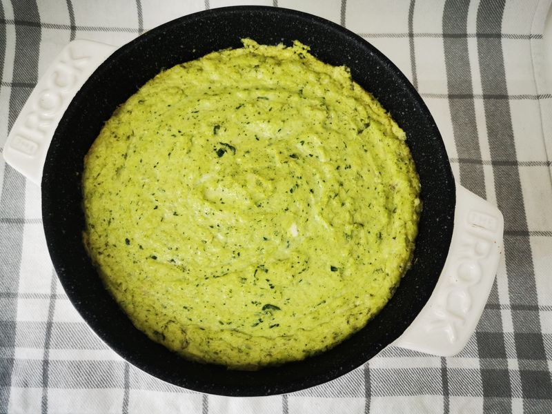

Trempette aux artichauts
Préparation: 10 minutes
Cuisson: 20 minutes
Ingrédients
-
250 g de fromage à la crème

-
1/4 t de mayonnaise
-
1 boîte d'artichauts dans l'eau égoutées
-
1 t de fromage mozzarella râpé
-
1/2 t de bébés épinards
-
poivre
Instructions
Placer la grille au centre du four. Préchauffer le four à 180 °C (350 °F).
À l'aide d'un mélangeur, combiner le fromage à la crème avec la mayonnaise jusqu'à ce que le mélange soit lisse.
- 250 g de fromage à la crème
- 1/4 t de mayonnaise
Ajouter les autres ingrédients et mélanger grossièrement, selon vos préférences.
- 1 boîte d'artichauts dans l'eau égoutées
- 1 t de fromage mozzarella râpé
- 1/2 t de bébés épinards
- poivre
Verser dans un contenant allant au four et cuire 20 minutes ou jusqu'à ce que la trempette soit dorée.